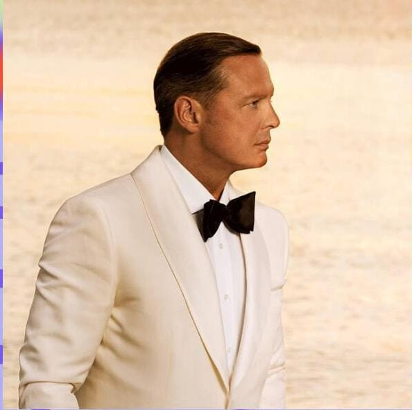

¿QUIEN ES LUIS MIGUEL?
Luis Miguel Gallego Basteri (19 de abril de 1970) cantante y productor musical. Nació en San Juan, Puerto Rico. Por cuestiones familiares Luis Miguel tuvo que trasladarse con su familia a México. En este país duraron un buen tiempo hasta que se trasladaron a la capital española.